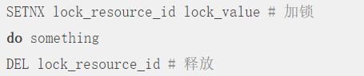
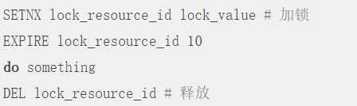
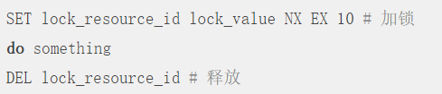
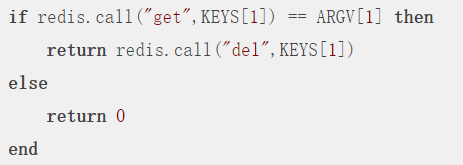
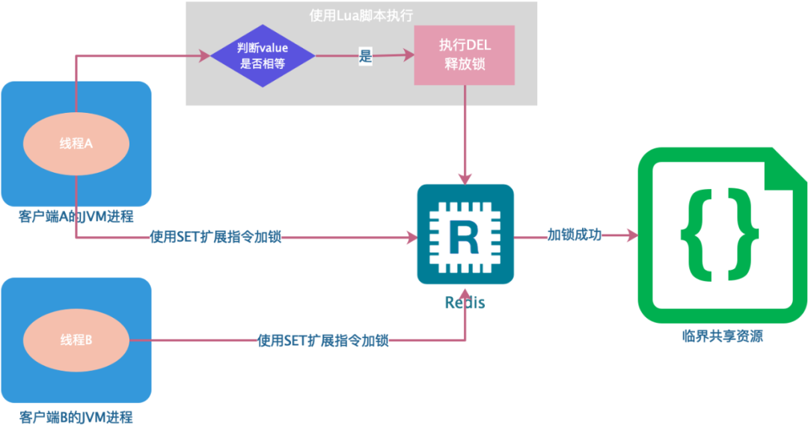

Redis实现分布式锁 #
1 背景 #
- 我们日常在电商网站购物时经常会遇到一些高并发的场景，例如电商 APP 上经常出现的秒杀活动、限量优惠券抢购，还有去哪儿网的火车抢票系统等，这些场景有一个共同特点就是访问量激增，虽然在系统设计时会通过限流、异步、排队等方式优化，但整体的并发还是平时的数倍以上，为了避免并发问题，防止库存超卖，给用户提供一个良好的购物体验，这些系统中都会用到锁的机制。
- 对于单进程的并发场景，可以使用编程语言及相应的类库提供的锁，如 Java 中的
Synchronized语法以及ReentrantLock类等，避免并发问题。 - 如果在分布式场景中，实现不同客户端的线程对代码和资源的同步访问，保证在多线程下处理共享数据的安全性，就需要用到分布式锁技术。


2 含义 #
- 分布式锁是控制分布式系统或不同系统之间共同访问共享资源的一种锁实现，如果不同的系统或同一个系统的不同主机之间共享了某个资源时，往往需要互斥来防止彼此干扰保证一致性。
- 一个相对安全的分布式锁，一般需要具备以下特征：
- 互斥性：互斥是锁的基本特征，同一时刻锁只能被一个线程持有，执行临界区操作。
- 超时释放：通过超时释放，可以避免死锁，防止不必要的线程等待和资源浪费。
- 可重入性：一个线程在持有锁的情况可以对其再次请求加锁，防止锁在线程执行完临界区操作之前释放。
- 高性能和高可用：加锁和释放锁的过程性能开销要尽可能的低，同时也要保证高可用，防止分布式锁意外失效。
3 实现方式 #
- 使用 Redis 作为分布式锁，本质上要实现的目标就是一个进程在 Redis 里面占据了一个仅有的“茅坑”，当别的进程也想来“占坑”时，发现已经有人蹲在那里了，就只好放弃或者等待稍后再试。
- 目前基于 Redis 实现分布式锁主要有两大类，一类是基于单机，另一类是基于多机，不管是哪种实现方式，均需实现加锁、解锁、锁超时这三个分布式锁的核心要素。
3.1 基于 Redis 单机实现的分布式 #
3.1.1 使用 SETNX 指令 #
-
最简单的加锁方式就是直接使用 Redis 的 SETNX 指令，该指令只有在
key不存在的情况下，将key的值设置为true，若key已经存在，则 SETNX 命令不做任何动作。 -
key是锁的唯一标识，可以按照业务需要锁定的资源来命名：- 比如，在某商城的秒杀活动中对某一商品加锁，那么
key可以设置为lock_resource_id，value可以设置为任意值，在资源使用完成后，使用 DEL 删除该key对锁进行释放，整个过程如下：  - 很显然，这种获取锁的方式很简单，但也存在一个问题，就是我们上面提到的分布式锁三个核心要素之一的锁超时问题，即如果获得锁的进程在业务逻辑处理过程中出现了异常，可能会导致 DEL 指令一直无法执行，导致锁无法释放，该资源将会永远被锁住。
- 所以，在使用 SETNX 拿到锁以后，必须给
key设置一个过期时间，以保证即使没有被显式释放，在获取锁达到一定时间后也要自动释放，防止资源被长时间独占，由于 SETNX 不支持设置过期时间，所以需要额外的 EXPIRE 指令，整个过程如下： 
- 比如，在某商城的秒杀活动中对某一商品加锁，那么
-
这样实现的分布式锁存在一个严重问题，由于SETNX 和 EXPIRE 这两个操作是非原子性的，如果进程在执行 SETNX 和 EXPIRE 之间发生异常，SETNX 执行成功，但 EXPIRE 没有执行，导致这把锁变得长生不老，这种情况可能出现锁超时问题，其它进程无法正常获取锁。

3.1.2 使用 SET 扩展指令 #
-
为了解决 SETNX 和 EXPIRE 两个操作非原子性的问题，可以使用 Redis 的 SET 指令的扩展参数，使得 SETNX 和 EXPIRE 这两个操作可以原子执行，整个过程如下： 
- NX：表示只有当
lock_resource_id对应的key值不存在的时候才能 SET 成功，保证了只有第一个请求的客户端才能获得锁，而其他客户端在锁被释放之前都无法获得锁。 - EX：表示这个锁 10 秒钟后会自动过期，业务可以根据实际情况设置这个时间大小。
- NX：表示只有当
-
但是这种方式仍然不能彻底解决分布式锁超时问题：
- 锁被提前释放：假如线程 A 在加锁和释放锁之间的逻辑执行的时间很长（或者线程 A 执行过程中被阻塞），以至于超出了锁的过期时间后进行了释放，但线程 A 在临界区的逻辑还没有执行完，那么这时候线程 B 就可以提前重新获取这把锁，导致临界区代码不能严格的串行执行。
- 锁被误删：假如以上情形中的线程 A 执行完后，他并不知道此时的锁持有者是线程 B，线程 A 会继续执行 DEL 指令来释放锁，如果线程 B 在临界区的逻辑还没有执行完，线程 A 实际上释放了线程 B 的锁。
-
为了避免以上情况，建议不要在执行时间过长的场景中使用 Redis 分布式锁，同时一个比较安全的做法是在执行 DEL 释放锁之前对锁进行判断，验证当前锁的持有者是否是自己，具体的实现如下：
-
在加锁时将
value设置为一个唯一的随机数（或者线程 ID），释放锁时先判断随机数是否一致，然后再执行释放操作，确保不会错误地释放其他线程持有的锁，除非是锁过期了被服务器自动释放，整个过程如下：
-
但判断
value和删除key是两个独立的操作，并不是原子性的，所以这个地方需要使用 Lua 脚本进行处理，因为 Lua 脚本可以保证连续多个指令的原子性执行：

-
-
基于 Redis 单节点的分布式锁基本完成了，但是这并不是一个完美的方案，只是相对完全一点，因为他并没有完全解决当前线程执行超时锁被提前释放后，其他线程趁虚而入的问题。
3.1.3 使用 Redisson 的分布式锁 #
3.1.3.1 什么是 Redisson #
- Redisson 是架设在 Redis 基础上的一个 Java 驻内存数据网络（In-Memory Data Grid）。
- 他充分利用了 Redis 键值数据库提供的一系列优势，基于 Java 实用工具包中常用接口，为使用者提供了一系列具有分布式特性的常用工具类，使得原本作为协调单机多线程并发程序的工具包获得了协调分布式多机多线程并发系统的能力，大大降低了设计和研发大规模分布式系统的难度。
- 同时结合各富特色的分布式服务，更进一步简化了分布式环境中程序相互之间的协作。
3.1.3.2 Redisson 实现 Redis 分布式锁的底层原理 #

3.1.3.2.1 加锁机制 #
-
假如现在某个客户端要加锁，而且该客户端面对的是一个 Redis Cluster 集群，那么他首先会根据
hash节点选择一台机器。 -
然后，就会发送一段 Lua 脚本到 Redis 上，这段 Lua 脚本如下所示：

-
KEYS[1]：表示我们加锁的那个key，比如说RLock lock = redisson.getLock("myLock");，这里我们自己设置了加锁的那个锁key就是mylock。 -
ARGV[1]：表示锁key的默认生存时间，默认是 30 秒。 -
ARGV[2]：表示加锁的客户端 ID，类似于8743c9c0-0795-4907-87fd-6c719a6b4586:1。- 为什么要用 Lua 脚本？ 因为一大坨复杂的业务逻辑，可以通过封装在 Lua 脚本发送给 Redis，保证这段复杂业务逻辑执行的原子性。
-
-
上面脚本中，第一段
if判断语句，就是用exists myLock命令判断一下，如果我们要加锁的那个key不存在的话，我们就进行加锁。 -
加锁的方法为：
hset myLock 8743c9c0-0795-4907-87fd-6c719a6b4586:1 1通过这个命令，设置一个
hash数据结构，这行命令执行后，会出现一个类似于下面的数据结构：
上述就代表
8743c9c0-0795-4907-87fd-6c719a6b4586:1这个客户端对myLock这个锁key完成了加锁。 -
接着会执行
pexpire myLock 30000，设置myLock这个锁key的生存时间是 30 秒。 -
到此为止，加锁就完成了。
3.1.3.2.2 锁互斥机制 #
- 在这个时候，如果客户端 2 来尝试加锁，执行了同样一段的 Lua 脚本，在第一个
if判断里会执行exists myLock，发现myLock这个锁key已经存在了。 - 接着第二个判断里，会判断
myLock锁key的hash数据结构中是否包含客户端 2 的 ID，这时候明显不是的，因为那里包含的是客户端 1 的 ID。 - 所以，客户端 2 会获取到
pttl myLock返回的一个数字，这个数字代表了myLock这个锁key的剩余生存时间，比如还剩15000毫秒的生存时间。 - 此时客户端 2 会进入一个
while循环，不停的尝试加锁。
3.1.3.2.3 Watch Dog 自动延期机制 #
- 只要客户端 1 一旦加锁成功，就会启动一个 Watch Dog 看门狗，他是一个后台线程，会每隔 10 秒检查一下，如果客户端 1 还持有
key，那么就会不断的延长锁key的生存时间。
3.1.3.2.4 可重入加锁机制 #
- 如果客户端 1 已经持有了这把锁，结果可重入的加锁，会通过一下机制来实现：
- 假如有如下代码：

- 然后我们来分析一下上面那段 Lua 脚本：
- 第一个
if判断肯定不成立，exists myLock会显示锁key已经存在了。 - 第二个
if判断会成立，因为myLock的hash数据结构中包含的那个 ID，就是客户端 1 的那个 ID，也就是8743c9c0-0795-4907-87fd-6c719a6b4586:1，此时就会执行可重入加锁的逻辑：-
执行以下命令，对客户端 1 的加锁次数累加 1：
hincrby myLock 8743c9c0-0795-4907-87fd-6c71a6b4586:1 1 -
此时
myLock数据结构变为下面这样：
-
可以看出，
myLock的hash数据结构中的那个客户端 ID 就对应着加锁的次数。
-
- 第一个
- 假如有如下代码：
3.1.3.2.5 释放锁机制 #
- 如果执行
lock.unlock()，就可以释放分布式锁，此时会对myLock数据结构中的那个加锁次数减 1。 - 如果发现加锁次数是 0 了，说明这个客户端已经不再持有锁了，此时就会用
del myLock命令，从 Redis 里删除这个key，然后客户端 2 就可以尝试完成加锁了。
3.1.3.3 优缺点 #
3.1.3.3.1 缺点 #
- 上面那种方案的最大问题是如果我们对某个 Redis Master 实例写入了
myLock这种锁key的value，此时会异步复制给对应的 Master Slave 实例，但是这个过程中一旦发生 Redis Master 宕机，主备切换，Redis Slave 变成了 Redis Master，接着就会导致客户端 2 来尝试加锁的时候，在新的 Redis Master 完成了加锁，而客户端 1 也以为自己完成了加锁，此时就会导致多个客户端对一个分布式锁完成了加锁，这时系统在业务语义上一定会出现问题，导致各种脏数据的产生。 - 所以上面就是Redis Cluster 或者 Redis Master-Slave 架构的主从异步复制导致的 Redis 分布式锁的最大缺陷，即在 Redis Master 实例宕机的时候，可能导致多个客户端同时完成加锁。
3.2 基于 Redis 多机实现的分布式锁 RedLock #
3.2.1 背景 #
- 以上几种基于 Redis 单机实现的分布式锁其实都存在一个问题，就是加锁时只作用在一个 Redis 节点上，即使 Redis 通过 Sentinel 保证了高可用，但由于 Redis 的复制是异步的，Master 节点获取到锁后在未完成数据同步的情况下发生故障转移，此时其他客户端上的线程依然可以获取到锁，因此会丧失锁的安全性。
- 整个过程如下：
- 客户端 A 从 Master 节点获取锁。
- Master 节点出现故障，主从复制过程中，锁对应的
key没有同步到 Slave 节点。 - Slave 升级为 Master 节点，但此时 Master 中没有锁数据。
- 客户端 B 请求新的 Master 节点，并获取到了对应同一个资源的锁。
- 出现多个客户端同时持有同一个资源的锁，不满足锁的互斥性。
- 正因为如此，在 Redis 的分布式环境中，Redis 的作者 Antirez 提供了 RedLock 的算法实现一个分布式锁。
3.2.2 算法原理 #
- 在 Redis 的分布式环境中，我们假设有 $N$ 个 Redis Master，这些节点完全相互独立，不存在主从复制或者其他集群协调机制，我们确保将在 $N$ 个实例上使用与 Redis 单实例下相同方法获取和释放锁。
- 现在我们假设有 5 个 Redis Master 节点，同时我们需要在 5 台服务器上面运行这些实例，这样保证他们不会同时宕掉。
- 为了获取到锁，客户端应该执行以下动作：
-
获取当前 Unix 时间，以毫秒为单位。
-
依次尝试从 5 个实例，使用相同的
key和具有唯一性的value（例如 UUID）获取锁，当向 Redis 请求获取锁时，客户端应该设置一个网络连接和响应超时时间，这个时间应该小于锁的失效时间（例如，我们的锁的自动失效时间为 10 秒，则超时时间应该在 5~50 毫秒之间）这样可以避免服务器端 Redis 已经挂掉的情况下，客户端还在死死地等待响应结果，如果服务器没有在规定时间内响应，客户端应该尽快尝试去另外一个 Redis 实例请求获取锁。 -
客户端使用当前时间减去开始获取锁时间，就可以得到获取锁使用的时间，当且仅当从大多数（$\frac N 2 + 1$）的Redis节点都取到锁，并且使用的时间小于锁失效的时间时，锁才算获取成功。
-
如果成功获取锁，则锁的真正有效时间是 TTL减去第3步的时间差 的时间，比如，TTL是5s，获取锁用了3s，则锁真正有效时间为3s（其实应该再减去时钟漂移）。
- 什么是TTL？
TTL，全称为Time to Live，即Redis的
key的过期时间或有效生存时间。 - 什么是始终漂移？ 时钟漂移是指在时间流速基本相同的情况下，两个电脑（或两个进程间）时间的差值，如果电脑距离过远会造成时钟漂移值过大。
- 什么是TTL？
TTL，全称为Time to Live，即Redis的
-
如果因为某些原因获取锁失败（没有在至少$\frac N 2 + 1$个Redis实例取到锁，或者取锁时间已经超过了有效时间），客户端应该在所有的Redis实例上进行解锁。
为什么在获取锁失败的时候加锁失败的节点也需要执行释放锁的操作？
- 因为可能存在某个节点加锁成功后返回客户端的响应包丢失了，这种情况在异步通信模型中是有可能发生的。
- 客户端向服务器通信是正常的，但反方向却是有问题的，虽然对于客户端而言，由于响应超时导致加锁失败，但是对于Redis节点而言，
SET指令执行成功，意味着加锁成功。
- 客户端向服务器通信是正常的，但反方向却是有问题的，虽然对于客户端而言，由于响应超时导致加锁失败，但是对于Redis节点而言，
- 因此，释放锁的时候，客户端也应该对那些获取锁失败的Redis节点同样发起解锁请求。

- 因为可能存在某个节点加锁成功后返回客户端的响应包丢失了，这种情况在异步通信模型中是有可能发生的。
-